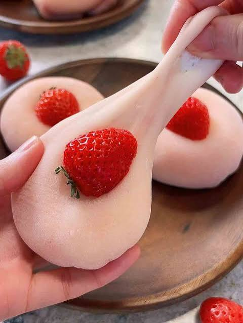

Strawberry mochi, traditionally known in Japan as Ichigo Daifuku, is a popular seasonal sweet featuring a whole fresh strawberry wrapped in a layer of sweet red bean paste and enclosed in a soft, chewy mochi shell. Making this refreshing wagashi at home is incredibly quick using a microwave.
I have gathered some top-rated recipes from the web, or you can follow the chewy, microwave-friendly recipe below.
Thoroughly dry your hulled strawberries. Divide the red bean paste into 6 equal portions, roll them into balls, flatten them, and wrap them tightly around each strawberry, leaving the very tip of the strawberry exposed. Chill these in the fridge.
Whisk the glutinous rice flour, sugar, and water together in a microwave-safe bowl until completely smooth with no remaining lumps.
Cover the bowl loosely with plastic wrap. Microwave on high for 1 minute, remove, and stir well with a wet spatula. Cover again and microwave for another 1 minute until the dough becomes slightly translucent, glossy, and highly sticky.
Liberally dust your clean workspace and hands with potato starch. Scrape the hot mochi dough onto the surface, dust the top, and flatten or roll it out into a sheet. Cut the dough into 6 equal portions
Take a piece of flattened mochi dough, place a bean-paste-covered strawberry in the center (tip facing down), and pull the edges up and over the base. Pinch the mochi seams tightly at the bottom to seal. Roll it gently in your hands to smooth out the shape, and serve seam-side down